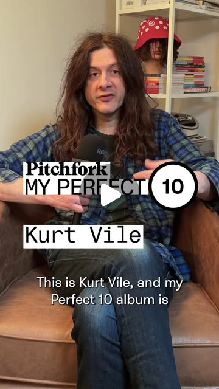

Instagram Reel

Kurt Vile's Perfect 10 is an MF DOOM collab that carries on hip-hop tradition
video transcript (enriched by ClaudeClaw)
Summary
[CAPTION]
Kurt Vile's Perfect 10 is an MF DOOM collab that carries on hip-hop tradition
[VIDEO]
Hey, what's up. This is Kurt Weil, and my Perfect Ten album is Zarface, Super What with a question mark.
[CAPTION]
Kurt Vile's Perfect 10 is an MF DOOM collab that carries on hip-hop tradition
[VIDEO]
Hey, what's up? This is Kurt Weil, and my Perfect Ten album is Zarface, Super What with a question mark. It's a super group. It's these two guys from Boston, Esoteric and Seven L's the DJ. Esoteric is the rapper. He's from other groups, uh like Jedi Mind Tricks and stuff, and I think Seven L was with him the whole time. I read in the MF Doom book that they were at MF Doom's first gig, for instance, at this like open mic in New York. I've met Esoteric. I look up to him a lot. He's really cool. I've talked to Seven L. But anyway, the third member of this group is uh Inspector Deck from Wu Tang Clan. He's got one of the two verses in Cream, Cash Rules Everything Around Me by Wu Tang Clan, so that's that's epic. The cool thing about Zarface in general is that they have the old school hip hop tradition, but then they're still making these new records, and they're oh they always have guests like MF Doom or Jiza, the genius, or so many different people all the time, but it's it's those three guys, and then they make these modern hip hop records that lean backwards but also go forward into the future. Oh, and there's like a fifth beetle in the band, you could say, and his name is Jeremy Page, and you'd think it sounds like old school sampling and all that stuff, but Esoteric told me that they make a lot of their own samples and things like that. But this this this record is very short and sweet. It's called Super What. Everybody's entrance is strong, and they have a guest on it, run DMC. DMC is in there early on, but everybody's entrance is strong, whether it's MF Doom's moment or a a tape collage or esoteric's entrance moment, DMC's entrance moment. It's all like super strong and it's it's disorienting because all these different people and elements and dimensions of sound. It keeps evolving and and turning around into itself. Uh it's just such a great record. And the moment I heard it, it blew my mind. I revisit a lot, but it with me I'm a I'm a nostalgic person, so I remember the moment I heard it and it was my introduction. Like I didn't even know who Zarface was. I thought it w I just saw MF Doom. There's like so many MF Doom moments that are iconic, obviously, and like this record kind of stands for it. It covers a lot of bases. It covers a lot of the hip hop greats from back then up to today, like still carrying on that tradition and stuff. And yeah, in in in my own work I have a a communication with Esoteric. I like him a lot. I met him. We've traded things back and forth, you know, and I think about him a lot a lot in the studio. Same with Seven L and uh Jeremy Page. Their production alone is really cool and inspiring and hypnotic and I try to put that into my music as well in my own home studio with my boys with my posse.
View original on Instagram Reel →